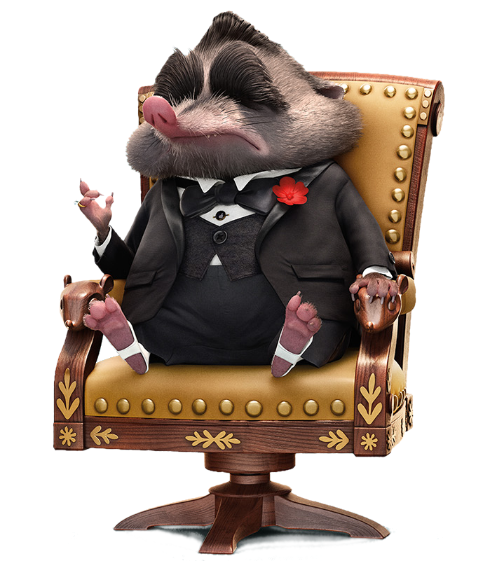

Judy Hopps is the first bunny ever to join Zootopia's police department. Determined to prove herself, Judy jumps at the chance to crack a case, even if it means teaming up with a con artist fox.
Nick Wilde
Nick Wilde is a charming, small-time, con artist fox with a big mouth and a lot of opinions. But when a rabbit cop outsmarts him, he finds himself actually helping her solve a mystery.

Mr. Big
Ice 'em!― Mr. Big's signature phrase
Mr. Big is a supporting character in the 2016 Disney animated feature film, Zootopia. He is an arctic shrew with an ironic reputation of being the most feared crime boss in Tundratown.
Bellwether
Assistant Mayor Bellwether is a sweet sheep with a little voice and a lot of wool, who constantly finds herself under foot of the larger-than-life Mayor Lionheart.